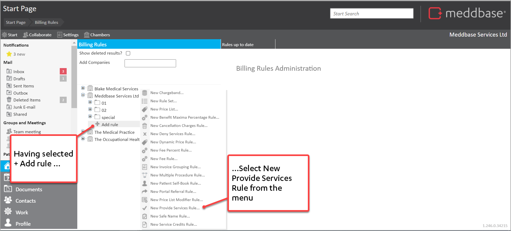
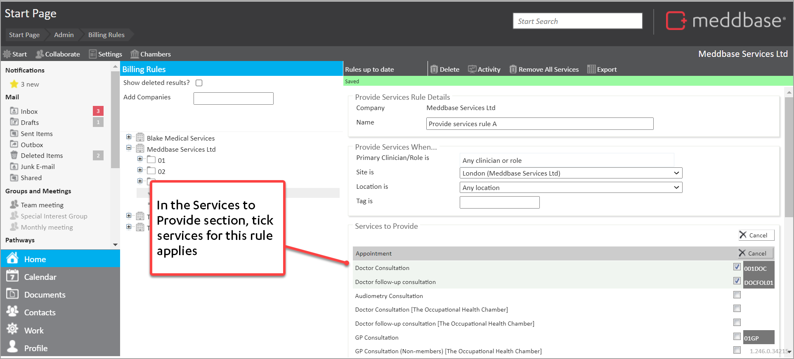
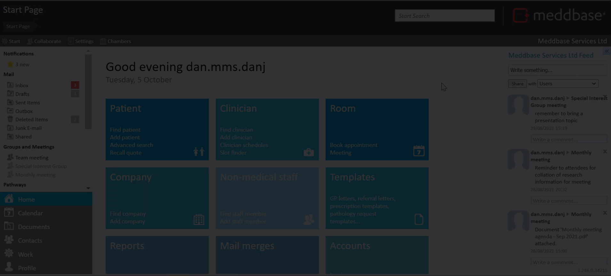
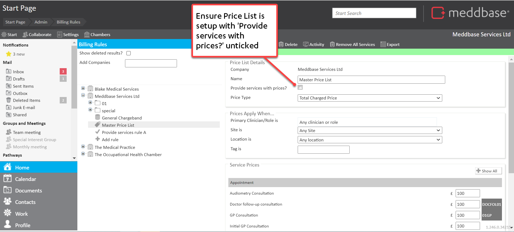
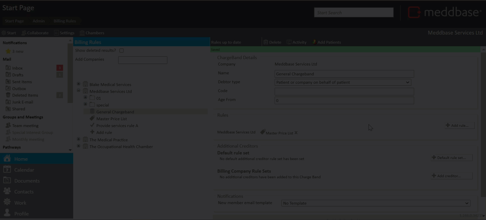

There are different ways that you can control the availability of services for booking. A simple option that may do what you need is to:
But that may not always fit the bill.
This article explains:
What does the Provide Services Rule do?
The Provide Services rule works in conjunction with Price Lists on a Charge Band. When the Provide services with prices? check-box is not ticked on a Price list, you can use the Provide Services rule to define what services are available under different conditions for a Charge Band
To set up a Provide Services Rule:
1. Go to Start Page > Admin > Billing Rules
2. Select the required company under which the Provide Services Rule should be created
3. Click on + Add rule under the company
4. From the menu that appears, select New Provide Services Rule.

You are presented with a Provide Services Rule Details panel on the right-hand side of the screen. This contains a range of fields and sections as outlined in the table below.
| Section / Field | Explanation |
| Provide Services Rule Details | |
| Name | Enables you to set the name of the Provide Services rule that will be displayed in the Billing rules list. |
| Provide Services When... | |
| Primary Clinician/Role is | Enables you to define that the rule only applies when a specific clinician is attending |
| Site is | Enables you to define that the rule only applies if the appointment is at a specific site |
| Location is | Enables you to define that the rule only applies if the appointment is at a specific location within a site |
| Tag is | Enables you to define that the rule only applies if the 'Billing Tag' for a session is equal to the text field |
| Services to Provide | |
Enables you to select the services that apply within this Provide Services rule. If a service is not ticked, it will not be available to the Charge Band through this Provide Services rule. | |
5. Set the Name for the Provide Services rule
6. Set the values for Provide Services When... as needed
7. In the Services to Provide section

The Provide Services Rule is automatically saved as you update it.
Want to see how it's done?
The short video below shows an example of how a Provide Service Rule can be created.

When the Provide Services Rule has been created, there are further steps needed to make it usable. These are explained in outline below.
1. Ensure a Charge Band is available. Either
2. Ensure a Pricelist is available. Either

3. Go to the relevant Charge Band
